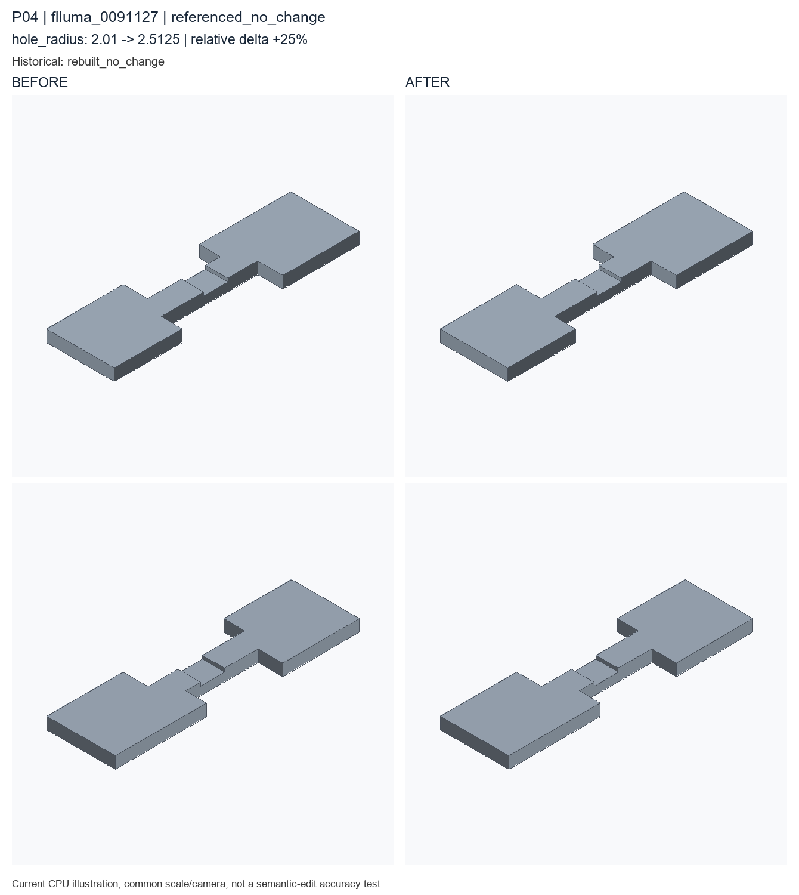

referenced_no_change; hole_radius: 2.01 → 2.5124999999999997. Author semantic confirmation PENDING.

Historical record: rebuilt_no_change. These are current CPU re-exports, not recovered historical STEP bytes.
Original case metadata and literal examples · Exact code difference · Camera and geometry diagnostics
params = Parameters()
params.add('hole_radius', 2.01, min=0.8, max=5.0, semantic_type='hole_radius')
params.add('pocket_length', 21.1, min=6.0, max=40.0, semantic_type='pocket_length')
params.add('pocket_width', 10.14, min=4.0, max=26.0, semantic_type='pocket_width')
params.add('thickness', 5.0, min=3.0, max=16.0, semantic_type='thickness')
part = Part('flluma_0005100', category='stepped_profile_mount', parameters=params, seed=20265614, sample_id='flluma_0005100', units='mm')
sketch = part.sketch_polygon(name='stepped_outer_profile', points=[[-50.45, -13.63], [-12.13, -13.63], [-12.13, -4.81], [18.34, -4.81], [18.34, -15.06], [50.45, -15.06], [50.45, 13.34], [22.02, 13.34], [22.02, 4.52], [-18.34, 4.52], [-18.34, 15.06], [-50.45, 15.06]], closed=True, semantic_type='extrude_profile')
solid = part.extrude(name='extrude_stepped_mount', profile=sketch, height=params['thickness'], semantic_type='extruded_plate')
holes = part.hole_pattern(name='stepped_mount_holes', target=solid.top_face(), radius=params['hole_radius'], depth='through', positions=[[-34.21, -8.22], [34.21, 7.53]], semantic_type='mounting_hole')
pocket = part.rectangular_pocket(name='stepped_mount_recess', target=holes.top_face(), length=params['pocket_length'], width=params['pocket_width'], depth=1.44, semantic_type='pocket')
__all__ = ['part']params = Parameters()
params.add('hole_radius', 2.5125, min=0.8, max=5.0, semantic_type='hole_radius')
params.add('pocket_length', 21.1, min=6.0, max=40.0, semantic_type='pocket_length')
params.add('pocket_width', 10.14, min=4.0, max=26.0, semantic_type='pocket_width')
params.add('thickness', 5.0, min=3.0, max=16.0, semantic_type='thickness')
part = Part('flluma_0005100', category='stepped_profile_mount', parameters=params, seed=20265614, sample_id='flluma_0005100', units='mm')
sketch = part.sketch_polygon(name='stepped_outer_profile', points=[[-50.45, -13.63], [-12.13, -13.63], [-12.13, -4.81], [18.34, -4.81], [18.34, -15.06], [50.45, -15.06], [50.45, 13.34], [22.02, 13.34], [22.02, 4.52], [-18.34, 4.52], [-18.34, 15.06], [-50.45, 15.06]], closed=True, semantic_type='extrude_profile')
solid = part.extrude(name='extrude_stepped_mount', profile=sketch, height=params['thickness'], semantic_type='extruded_plate')
holes = part.hole_pattern(name='stepped_mount_holes', target=solid.top_face(), radius=params['hole_radius'], depth='through', positions=[[-34.21, -8.22], [34.21, 7.53]], semantic_type='mounting_hole')
pocket = part.rectangular_pocket(name='stepped_mount_recess', target=holes.top_face(), length=params['pocket_length'], width=params['pocket_width'], depth=1.44, semantic_type='pocket')
__all__ = ['part']